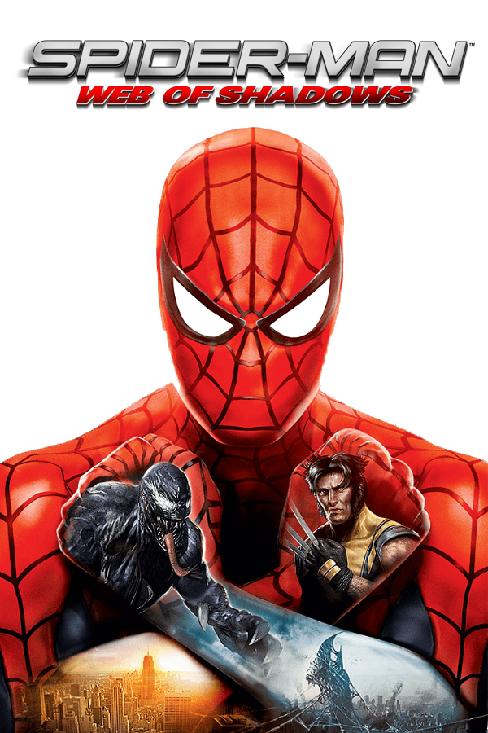

Spider-Man: Web of Shadows
Spider-Man: Web of Shadows
Details
|  | |
| Playtime | Not Played |
| Last Activity | Never |
| Added | 4/29/2025 4:54:57 |
| Modified | 4/29/2025 8:55:31 |
| Completion Status | Not Played |
| Library | Playnite |
| Source | |
| Platform | Sony PlayStation 3 |
| Release Date | 10/21/2008 |
| Community Score | 75 |
| Critic Score | 70 |
| User Score | |
| Genre | Action Open world |
| Developer | Aspyr Media Shaba Games Treyarch |
| Publisher | Activision |
| Feature | Controller Support Single Player |
| Links | PCGamingWiki HowLongToBeat IGDB MobyGames Wikipedia |
| Tag | Comic Book Contemporary Direct control North America Realistic Real-Time Supernatural Third Person Treyarch NGL |
Description
Spider-Man: Web of Shadows is a 2008 action-adventure video game based on the Marvel Comics character Spider-Man. The game was released in October 2008 across multiple platforms, and encompasses three drastically different versions: one released for Microsoft Windows, the PlayStation 3, Wii, and Xbox 360, which features an open world and non-linear gameplay; one for the PlayStation 2 and PlayStation Portable (titled Spider-Man: Web of Shadows – Amazing Allies Edition), which is a 2.5D side-scrolling beat 'em up; and one for the Nintendo DS, a Metroidvania-style beat 'em up. All three versions have several common elements, such as moral choices that alter the narrative, the ability to summon allies during fights, and a similar plot, despite different characters being featured. Web of Shadows' storyline is significantly darker than most previous Spider-Man games, as it revolves around a symbiote invasion threatening Manhattan, which Spider-Man must stop with the help of several unlikely allies.
Upon release, the game received generally mixed to positive reviews from critics, who singled out the boss fights, destructive combat, original story, gameplay and open-ended nature. However, the game's choice system received mixed reviews; although some praised how the player is able to create a dynamic experience with their choices, others were critical of the system's limitations. In addition, reviewers criticized the storyline's poor execution, bothersome camera controls, the inability to free-roam after completing the main storyline, lip-syncing issues and the subpar graphics.
Spider-Man: Web of Shadows, along with most other games published by Activision that had used the Marvel license, was de-listed and removed from all digital storefronts on January 1, 2014. It was the only Spider-Man game developed by Shaba Games and was assisted by Treyarch (their last time on a Spider-Man game), as the license was then passed to Beenox, who went on to develop several Spider-Man games of their own, beginning with Spider-Man: Shattered Dimensions in 2010.
Gameplay
Microsoft Windows, PlayStation 3, Wii, and Xbox 360
Spider-Man Web of Shadows is a third-person action-adventure video game set in an open-world outer area of Manhattan. The gameplay is very similar to that of previous Spider-Man titles (mainly Spider-Man 2, Spider-Man 3 and Ultimate Spider-Man), as it revolves around combat and exploration. Players control Spider-Man and can web swing, web zip, crawl walls, and use the 'spider-sense' to identify and lock onto enemies. The combat has been significantly improved compared to previous games, with players now able to fight enemies not only on the ground, but also on walls and in the air. The game introduces a "web strike" mechanic, which allows Spider-Man to attach a web line to the nearest enemy and pull himself towards them to deal damage.
While free roaming, players may stumble upon various random events, such as gang fights, injured civilians that need to be taken to the hospital, and, in the later stages of the game, symbiote nests that must be destroyed. While entirely optional and not required for completing the game, these events reward the player with XP, which can be used to unlock new fighting moves/combos for Spider-Man. Players can also earn XP from simply playing through the main story, completing challenges (such as defeating a given number of enemies), and finding collectibles hidden around the map. Collectibles also increase Spider-Man's health bar and web swinging speed.
The player is able to switch between Spider-Man's traditional red and blue suit and the black symbiote suit at any time during gameplay. Each suit provides a different gameplay style, and features individual upgrades. Chris Scholz from Shaba Games commented that the developers "worked on really separating the black and red suits to give the player a different feel". For example, while wearing the red suit, Spider-Man is faster and more agile with his attacks, whereas symbiote black suit Spider-Man is stronger and more destructive.
At specific points in the story, the player is presented with choices that affect Spider-Man's morality. This is reflected in the 'reputation bar', which becomes red when Spider-Man has a positive reputation, and black when the reputation is negative. At higher reputation levels, Spider-Man is viewed as a hero, and civilians will act friendly towards him and cheer him on; at lower reputation levels, civilians will cower in fear in Spider-Man's presence or run away. The reputation bar also affects which allies Spider-Man can summon during fights: at high reputation levels, superheroes such as Luke Cage, Moon Knight, and Wolverine can be summoned, whereas at low reputation levels, only villains like Black Cat, Vulture, Rhino, and Electro will come to Spider-Man's aid.
The mini-map on the screen is also different from the style used in previous Spider-Man games. The traditional 2-D overhead view has been removed, replaced by a new 3D map with an "X", "Y" and "Z" axis which shows the player's position in three-dimensional space (north and south, as well as vertical position). Also, as a Wii exclusive, there are 6 alternate costumes (Spider-Carnage for the black suit, and Spider-Armor, Ben Reilly, Spider-Man 2099, Cosmic Spider-Man, and Iron Spider for the red suit).
Although the player is unable to free-roam after the storyline's completion, this can be achieved through a secret method, which has the player watch the credits twice. Afterwards, when they select to continue the game, the player will start a new game, but will retain all their previous upgrades; this essentially acts as a New Game Plus mode.
The PlayStation 2 and PlayStation Portable versions were released as Spider-Man: Web of Shadows – Amazing Allies Edition and are drastically different from the console and PC version. These versions do not feature an open world, and are instead 2.5D side-scrolling brawlers. Players can alternate between Spider-Man's two costumes at any time during gameplay, with the game providing several scenarios in which one suit is more useful than the other. For example, there are several weak walls which can only be destroyed by the black suited Spider-Man. Each suit has individual upgrades, which unlock new combos or increase Spider-Man's health bar.
Like its title suggests, this version puts more emphasis on the ally system than the other versions, providing the biggest variety of allies and consumable power-ups. Instead of cutscenes, the game features dialogue trees, during which the player must select Spider-Man's replies from several different options, which can make Spider-Man appear respectful, mean, or neutral. Depending on which reply is chosen, the player will receive upgrade points for Spider-Man's red suit, black suit, or both. These sections function similarly to the moral choices in the console and PC version, and can have a major impact on the game's story.
The Nintendo DS version is also a 2.5D scrolling beat 'em up. Like in the other versions, Spider-Man has both his traditional red and blue suit and his symbiote black suit, which the player can switch between at any time during gameplay and which offer different playstyles (the red suit provides faster movement and attacks, whereas the black suit is slower, but has more devastating attacks). Players earn XP from defeating enemies, which can be used to unlock new combos for both suits. As the players progress through the story, they will also obtain upgrades that will allow them to explore more of the open world map and eventually reach the end of the game, similarly to the Castlevania and Metroid franchises.
The choice system has been redesigned to only consist of players choosing which mission to undergo next. This version features the fewest allies out of all the versions, with a total of four allies: Black Cat, the Green Goblin, Nightcrawler, and Venom. It also features an exclusive revival system where, if the player's health depletes, they can spend one "life point" to attempt to revive the fallen Spider-Man by using the Touch Screen to draw health orbs to him, while poking at poison orbs to destroy them. The revival will be successful if Spider-Man receives enough health orbs before a time limit is reached.
Plot
Microsoft Windows, PlayStation 3, Wii, and Xbox 360
The game begins with Spider-Man (Michael Vaughn) looking for Mary Jane Watson (Dana Seltzer) amidst the symbiote invasion in Manhattan. After finding her with Luke Cage (Robert Wisdom), he is attacked by an unknown assailant. Four days prior, Spider-Man has an encounter with Venom (Keith Szarabajka), during which part of the latter's symbiote attaches itself to Spider-Man, recreating his black suit. Spider-Man discovers he has more control over the symbiote, and easily defeats Venom, who flees afterward. Later, while helping Luke Cage deal with a gang war in Harlem, Spider-Man finds evidence that the Kingpin (Gregg Berger) is responsible for the war. During a parley between the two gangs' leaders (James C. Mathis III and Isaac C. Singleton Jr.) and Cage, Spider-Man can either present the evidence in order to end the war peacefully, or let the gangs finish each other off.
Afterwards, Spider-Man heads to Fisk Tower to confront the Kingpin, only to witness Black Cat (Tricia Helfer) leaving and begin chasing her. With assistance from Moon Knight (Robin Atkin Downes), Spider-Man defeats Black Cat, who reveals she is working as a double agent to bring down the Kingpin in an attempt to gain Spider-Man's affection. Returning or rejecting Black Cat's feelings, Spider-Man join forces with either her or Moon Knight to dismantle the Kingpin's operations, including his production of Goblin gliders, overseen by the Vulture (Kristoffer Tabori). During a fight with the Kingpin's men, Spider-Man is attacked by several symbiote-infected civilians, and decides to investigate. He encounters Wolverine (Steve Blum), who is also hunting symbiotes and mistakes Spider-Man for one, but the two settle their differences after a brief fight. Spider-Man's investigation leads him to Venom, who has been abducting and infecting civilians with his symbiote, but he escapes once again. As more people become infected, a S.H.I.E.L.D. team led by Black Widow (Salli Saffioti) sets up quarantine camps across Manhattan. Electro (Liam O'Brien) rampages through them in search of his sister but is defeated by Spider-Man, and escapes after being infected by a symbiote.
Unable to contact any scientific genius, Spider-Man reluctantly breaks the Tinkerer (William Utay) out of Ryker's Island, with help from an incarcerated Rhino (Fred Tatasciore), so that he would create a device to destroy the symbiotes without harming the hosts. However, by this point the symbiotes have taken over Manhattan, forcing S.H.I.E.L.D. to isolate it from the rest of New York. While S.H.I.E.L.D. constructs the Tinkerer's device, Spider-Man assists with various operations, such as persuading the Kingpin to aid S.H.I.E.L.D. and defeating Symbiote Electro, who also agrees to help after Spider-Man removes his symbiote. Spider-Man also defends the S.H.I.E.L.D. base at Stark Tower from a symbiote attack, assists Moon Knight in protecting Spector Tower, and aids Wolverine with a civilian evacuation. During the evacuation, Wolverine gets infected by a symbiote, but Spider-Man defeats and rescues him, potentially ripping him in half under the black suit's influence.
After assisting Mary Jane and Luke Cage with escorting civilians from Harlem to Fisk Tower, Spider-Man is devastated to learn the two have gone missing, and heads off to find them, leading to the game's opening sequence. The person who attacked him is revealed to be Symbiote Black Cat, whom he defeats with Mary Jane's help. However, Black Cat is severely injured in the process, forcing Spider-Man to leave her in Mary Jane's care, or infect her with a symbiote to heal her, which upsets Mary Jane. Meanwhile, S.H.I.E.L.D. installs the Tinkerer's completed device on the Trask Building, but Symbiote Vulture leads an aerial assault to destroy it. After defeating Symbiote Vulture, Spider-Man either activates the device, which eliminates all the symbiotes in Manhattan, including his black suit, or destroys it at Vulture's urging, who encourages him to rule over the symbiotes.
Either way, Spider-Man learns Venom is attacking the Helicarrier and proceeds to plant explosives across the doomed aircraft, before being confronted by a giant, five-headed Venom. After destroying four heads and failing to kill Venom with a Helicarrier turret, Spider-Man persuades Eddie Brock to come out of Venom and pay for his actions. After Brock dies, either at Spider-Man's hands or by committing a heroic sacrifice, Spider-Man escapes from the Helicarrier, just as the explosives detonate, destroying the aircraft and Venom.
In the aftermath, there are four endings regarding the suit paths:
- In the main Red Suit ending, Spider-Man oversees Manhattan's return to normal while reconciling with Mary Jane as he takes her on a web-slinging ride now that Venom is gone and the villains are behind bars.
- In the other Red Suit ending, Spider-Man leaves a message on Mary Jane's phone to apologize and hopes that she'll understand what he had to do to save Manhattan.
- In the main Black Suit ending, Spider-Man rules Manhattan with a Symbiote-controlled Black Cat as the Symbiotes worship him.
- In the other Black Suit ending, Spider-Man rules Manhattan vowing to get Mary Jane back as the Symbiotes worship him.
In both Black Suit outcomes, Kingpin and Black Widow send a newly re-Venomized Wolverine after Spider-Man.
After an encounter between Spider-Man and Venom, the latter inexplicably explodes, leaving no trace of Eddie Brock and causing Spider-Man to regain his symbiote black suit. Later, Spider-Man is surprised when Nick Fury calls him and reveals that Venom has infested Manhattan with his symbiote, forcing S.H.I.E.L.D. to quarantine the city. He also explains that Spider-Man's previous encounters with the symbiote gives him more control over it, though he warns him that the symbiote can still influence his behavior. Tasked with collecting pieces for a sonic generator that can counter the symbiotes, Spider-Man first goes after the Shocker (Liam O'Brien) to obtain his vibro gauntlets. Next, having been informed by the Kingpin, who is also trying to stop the symbiotes, that Spencer Smythe and A.I.M. are working on a secret project involving vibranium, Spider-Man infiltrates A.I.M.'s underground lab through the sewers. Along the way, he must avoid traps set by Kraven the Hunter (Dwight Schultz) and eventually confront him. Inside A.I.M.'s lab, Spider-Man encounters J. Jonah Jameson (Daran Norris), who was captured and cloned as part of a plot by Smythe to discredit both him and Spider-Man. After releasing either Jameson or his clone, Spider-Man defeats Rhino, who was hired to guard the lab, and escapes with the vibranium.
Returning to Manhattan, Spider-Man encounters Luke Cage, who suggests teaming up to fight the symbiotes. While doing so, Spider-Man learns of the Tinkerer's plan to spread the infestation to other countries, and has the option to redirect a train full of symbiotes towards Cage to make his own travel through the city easier. After defeating Cage, who was either infected by a symbiote or is trying to remove Spider-Man's black suit, believing it has corrupted him, Spider-Man infiltrates the Tinkerer's lab, encountering a brainwashed Venom, who was captured by the Tinkerer for experimentation. Eventually, Spider-Man defeats the Tinkerer and foils his plan, despite the villain's escape.
Afterwards, Spider-Man arrives on a symbiote-infested Helicarrier to build the sonic generator, but is forced to assist with the evacuation and reactivate the ship's defense systems. He encounters the Jackal (Greg Baldwin), hired by S.H.I.E.L.D. out of desperation for someone to analyze the symbiotes, who reveals that S.H.I.E.L.D. plans to weaponize the symbiotes and that he is in league with Spencer Smythe, who aims to control the symbiotes. However, Jackal betrays Smythe and tries to take Spider-Man's symbiote for his own ends. After defeating Jackal, Spider-Man escapes from the Helicarrier as it crashes in the city. Making his way to the crash site, Spider-Man finds a symbiote-infected Jessica Drew (Mary Elizabeth McGlynn), whom he defeats, and the blueprints for the sonic generator. He is then informed by Nick Fury that the sonic generator is on the top of Fisk Tower, so he goes there to combine the parts he collected to a super-computer, completing the generator. However, it is stolen by the Jackal while Spider-Man is busy fighting A.I.M. agents dispatched by Smythe. Claiming that he had nothing to do with the generator's theft and that it's too late to stop the symbiotes, Smythe then unleashes a mind-controlled Black Cat to kill Spider-Man, who either frees her from Smythe's control, or lets the mind-controlling device kill her so that he can take it for himself.
Spider-Man finds the stolen generator in Central Park and confronts Jackal, who reveals that he has modified it to control the symbiotes. After defeating Jackal, Spider-Man recovers the generator and programs it to either destroy or control the symbiotes. As the generator is powered up, Spider-Man finds a symbiote-filled fountain containing seven serpent heads with Venom's consciousness. Using the generator to supply energy that weaken the heads, Spider-Man defeats Venom, allowing him to stop the invasion or take over Manhattan as the new symbiote leader.
The game begins with the symbiote invasion already in progress. After an encounter with several symbiotes, Spider-Man is infected by one, but is able to maintain control over it, leading to the re-creation of his black suit, which he can now remove at will. Afterwards, thinking Venom is responsible for the invasion, Spider-Man searches for him. Along the way he encounters Black Cat (Valerie Arem), who informs him that both Nightcrawler (Yuri Lowenthal) and the Green Goblin (Roger L. Jackson) require his assistance: the former is helping out with civilian evacuations, while the latter is setting up bombs to defeat the symbiotes.
After choosing to help either of them twice or both once, and defeating several "super-symbiotes", Spider-Man arrives at a symbiote hive, where he finds and defeats Venom. However, the villain claims that he is not behind the invasion, but rather is trying to stop it as well. With Venom now too weak to accompany him, Spider-Man ventures deeper into the hive by himself and encounters the Symbiote Leader. After defeating him, the hive begins to collapse, but Spider-Man is able to escape in time. The ending of the game depends on who the player helped earlier.
- If they helped either Nightcrawler twice or both him and the Green Goblin once, Manhattan is saved and the citizens are freed from the symbiotes' control, praising Spider-Man, who thinks of taking a shower after having gone to the sewers twice in a day.
- If they helped the Green Goblin twice, Spider-Man realizes that with the symbiote leader gone, he is now in charge of the symbiotes. The infected citizens worship Spider-Man as their new leader while he swings through a New York City covered in symbiotes, reflecting upon how great power is simply a lot of power and that it is far better than sharing the responsibility.
Development
On April 17, 2008, Activision confirmed that Spider-Man: Web of Shadows was in development, and that the game would be released on the Microsoft Windows, Nintendo DS, PlayStation 2, PlayStation 3, PlayStation Portable, Wii, and Xbox 360 systems, and they confirmed that the story would center around an invasion on New York that Spider-Man and the other heroes and villains would have to deal with. Venom was confirmed as the main antagonist in June. Voice casting and direction was done by the husband and wife team of Keith and Valerie Arem.
Reception
Web of Shadows received generally average to positive reviews. GameRankings and Metacritic gave it a score of 79% and 77 out of 100 for the DS version; 54% and 52 out of 100 for the Microsoft Windows version; 69% and 69 out of 100 for the PlayStation 2 version; 70% and 67 out of 100 for the PlayStation 3 version; 77% for the PlayStation Portable version; 68% and 68 out of 100 for the Xbox 360 version; and 65% and 63 out of 100 for the Wii version.
IGN criticized the story, and also pointed out that the lock-on camera has a tendency to detach itself, making mid-air battles difficult. 1UP.com praised the PlayStation 3 and Xbox 360 versions of the game as having "plenty of cool "Spider-Man" moments throughout thanks to the basic locomotion and combat", which "settles into a rhythm of repetition", summing up with "Shadows might be the best Spider-Man game yet, but that's just a testament to the series' now-mediocre standards". GameSpot mentioned occasional technical issues with the graphics, sound, and camera, while praising the story, combat system, variety and "memorable" boss fights. GameSpy commented that "Web of Shadows manages to provide a good deal of fun even if it doesn't bring much new to the table", praising the animation and combat, and mentioning camera problems and visual glitches along with a repetition of objectives. Game Informer criticized the voice acting, camera, and animation, claiming, "as explosive as the new combat is, it's all this game has to offer". X-Play gave the PlayStation 3 and Xbox 360 versions three stars out of five and said, "there's enough great gameplay here to make Web of Shadows recommendable for Spider-Man fans. The sheer level of glitches in the game, however, manages to take the fun factor down several notches".
The DS version of the game, in contrast to the console versions, was relatively well-received, with reviewers praising level design similar to the Castlevania and Metroid franchises while criticizing the short length.